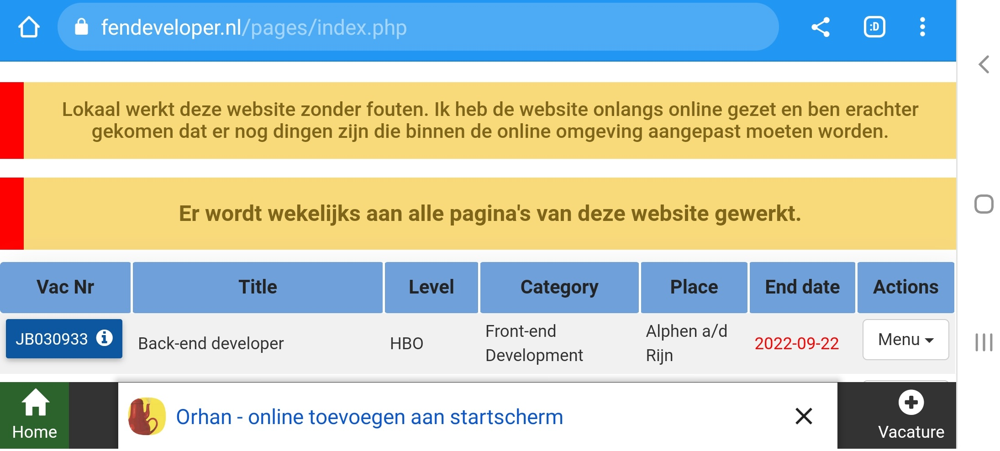

Deze website heb ik als voorbeeld gemaakt. Voor lokale versie werkt het met login systeem. Mocht u als werkgever geïnteresseerd zijn dan kom ik graag mijn code uitleggen.
De website is totaal dynamisch en past zich aan als een gebruiker de data verandert zoals het aantal open vacatures, gesloten vacatures etc. Deze website is de tweede versie en wordt, waar nodig, aanpassingen en verbeteringen doorgevoerd. Er is gebruik gemaakt van responsive design, zodat de gebruikers op alle devices de website makkelijk kunnen bekijken. Daarnaast is er rekening gehouden met de UX voor een duidelijk overzicht. U kunt deze website downloaden om als web applicatie te gebruiken, zie de afbeeldingen 5.1 en 5.2 onderaan deze pagina.
Technische gegevens:
- Back-end : Php (deels OOP), mysql. Php-versie: 7.4.28
- Front-end: Html5, Css3, Bootstrap, Javascript, Custom Components.
- Framework: Angularjs 1.6.2.
- Data: Sql queries en Json API.
- Progressive Web App (PWA) : Installeer en gebruik de website als een (web) app.
Tijdens het bouwen van een website, test ik altijd of de code voldoet aan vooral drie belangrijke onderdelen, namelijk accessibility, best practices en SEO. Zodoende kan de kwaliteit van een website gewaarborgd worden, zodat de verbeteringen doorgevoerd kunnen worden. Deze test is uitgevoerd voor mobile versie.
Hieronder zijn de testresultaten afgebeeld van de pagina's:
Afbeelding 1 : vacatureOverzicht.html
Afbeelding 2 : more-dashboards.php
Afbeelding 3 : index.php

Afbeelding 4 : about.html
Afbeelding 5.1 : PWA - Desktop

Afbeelding 5.2 : PWA - Mobile
